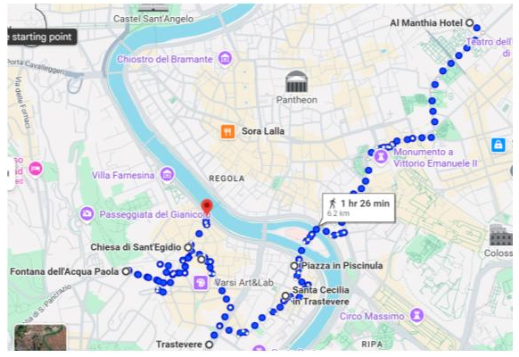
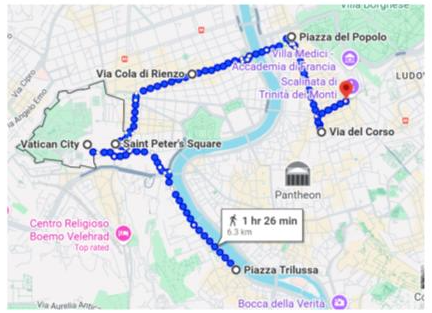

Roma

- Ir a Piazza in Piscinula, pasando por la Basílica Santa Cecilia hasta llegar a Trastevere.
- En Trastevere ver: Basilica Santa Maria del Fere, Fontana dell Acqua Paola, Piazza di Sant’Egidio, Piazza Trilussa.

- Piazza San Pedro y Basílica San Pedro (entrada gratuita).
- Subida a la Cúpula (gratis) y Museos Vaticanos / Capilla Sixtina (opcional, no incluido en este itinerario básico).
- Souvenirs: Via degli Scipioni (a una cuadra del metro Ottaviano).
- Ir por Via Cola Di Rienzo (zona comercial) hasta Piazza del Popolo (Villa Borghese).
- Luego tomar Via del Corso (comercial) hasta Piazza Di Spagna.